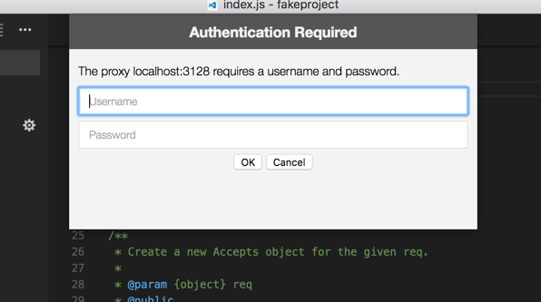

Visual Studio Code は Electron 上で構築され Chromium のプロトコル スタック(ネットワーキングスタック)機能を利用します。つまり VS Code ユーザーが Google Chrome で利用できるネットワーク サポートを同じように利用できるこということです。
ホスト名
VS Code では自動更新、拡張機能のクエリとインストール、テメトリなどの機能にネットワーク接続が必要です。これらの機能をプロキシ環境で正しく機能させるには、プロダクトが正しく構成される必要があります。
ホワイトリストに VS Code のドメインを追加する必要があるような Firewall を使用している場合に、追加する必要があるホスト名を次に示します:
- vscode-update.azurewebsites.net
- vscode.blob.core.windows.net
- marketplace.visualstudio.com
- rink.hockeyapp.net
プロキシサーバーのサポート
VS Code は Google Chromiumと同じプロキシ サーバーサポートを備えています。次は Chromium’s documentation の抜粋です:
|
これは自動的にプロキシ設定が取得される必要があります。
これができないときは、次のコマンドライン引数を使用してプロキシ設定を制御します:
|
これらのコマンド ライン引数の詳細については ここ を参照してください。
認証プロキシ
認証プロキシは PR #22369 の追加によって VS Code 内でシームレスに機能するようになりました。
サポートされる認証メソッドは次の通りです:
- Basic
- Digest
- NTLM
- Negotiate
認証プロキシ(HTTP) 環境で VS Code を使用すると次の認証ポップアップが表示されます:

SOCKS5 プロキシ認証の対応はまだ実装されていないことに注意してください。詳細 : issue in Chromium’s issue tracker
HTTP プロキシの認証の詳細については ここ を参照してください。
SSL 証明書
HTTPS プロキシは着信要求の SSL 証明書を書き換えます。Chromium は信頼できない証明書で署名されたレスポンスを拒否するように設計されています。SSL のセキュリティー関係に問題が発生した場合は次の対処法があります:
- Chromium は OS の証明書信頼を利用するだけなので、OS の信頼チェーンにプロキシの証明書を追加することが推奨されます。Chromium の Root Certificate Policy については こちら を参照してください。
localhostでプロキシを動かしているときは、--allow-insecure-localhostコマンドライン フラグを試してください。- どれも失敗した場合は
--ignore-certificate-errorsコマンドライン フラグを使用してすべての証明書エラーを無視するようにできます。Warning: セキュリティー問題が発生するので、危険で推奨されません。
レガシー プロキシ サーバー のサポート
まだ VS Code がサポートするプロキシ サポートでは拡張機能にまで効果がありません。GitHub の issue に関連します。
拡張機能と同様に、VS Code の機能のいくつかはプロキシ ネットワーキング、つまり CLI インターフェイスを完全にサポートしていません。CLI インターフェイスはコマンド プロントまたはターミナルから code --install-extension vscodevim.vim を実行するるときに得られるものです。この問題の開発状態は GitHub で確認できます。
これらの制約のため VS Code 設定の一部 http.proxy, http.proxyStrictSSL, http.proxyAuthorization 変数はこの 2 つの場合にまだ利用されます。
トラブルシューティング
ネットワーク接続のトラブルシューティングに役立つリンク: